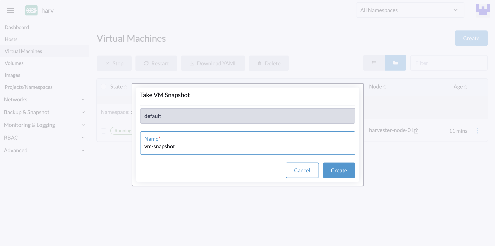
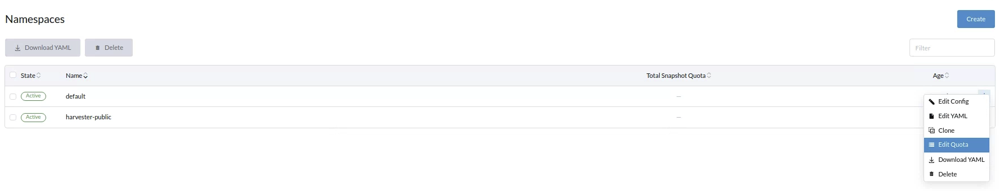
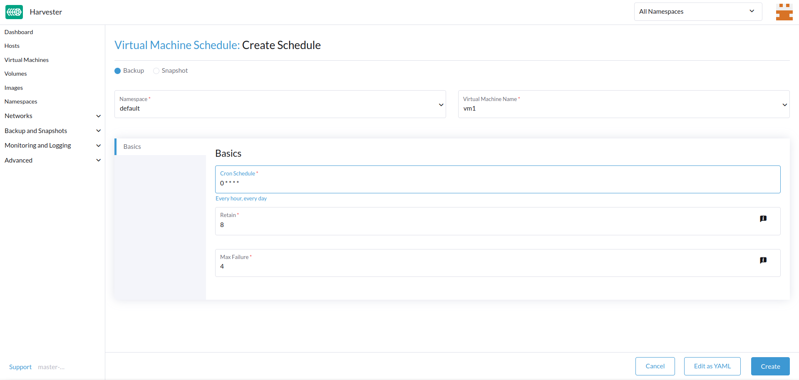
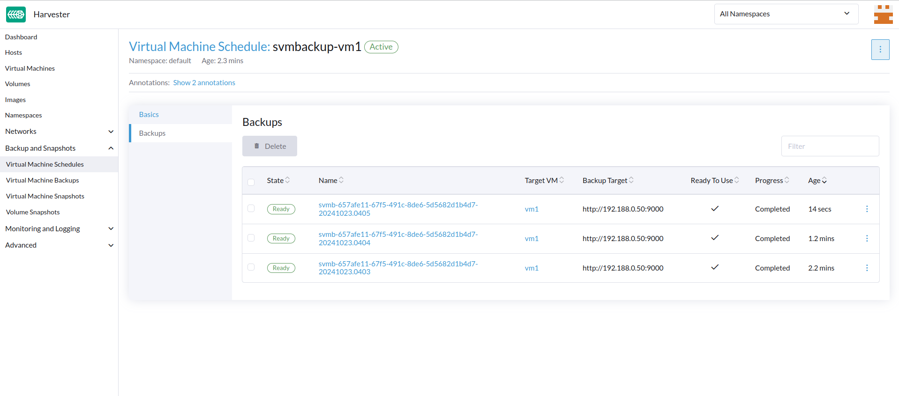

Sicherung, Snapshot und Wiederherstellung virtueller Maschinen
Sicherung und Wiederherstellung virtueller Maschinen
Die Sicherungen virtueller Maschinen werden von der Seite Virtuelle Maschinen erstellt. Die Sicherungs-Volumen der virtuellen Maschinen werden im Sicherungsziel (einem NFS- oder S3-Server) gespeichert und können verwendet werden, um entweder eine neue virtuelle Maschine wiederherzustellen oder eine vorhandene virtuelle Maschine zu ersetzen.

|
Ein Sicherungsziel muss konfiguriert werden. Weitere Informationen finden Sie in [Configure Backup Target]. Wenn kein Sicherungsziel festgelegt ist, wird eine Nachricht angezeigt, die Sie auffordert, eines zu konfigurieren. Die Unterstützung für Sicherungen ist derzeit auf SUSE Storage Volumen beschränkt. SUSE Virtualization kann keine Sicherungen von Volumen im externen Speicher erstellen. |
Sicherungsziel konfigurieren
Ein Sicherungsziel ist der Endpunkt, der verwendet wird, um auf einen Sicherungs-Store in SUSE Virtualization zuzugreifen. Ein Sicherungs-Store ist ein NFS-Server oder ein S3-kompatibler Server, der die Sicherungen der Volumen virtueller Maschinen speichert. Das Sicherungsziel kann bei Settings > backup-target festgelegt werden.
Die folgende Tabelle beschreibt Parameter, die für alle Sicherungsziele gemeinsam sind.
| Parameter | Typ | Beschreibung |
|---|---|---|
|
Zeichenfolge |
Art des Servers, der die Sicherungen der von virtuellen Maschinen verwendeten Volumen speichert. Sie können entweder |
|
integer |
Anzahl der Sekunden, die SUSE Virtualization wartet, bevor die Sicherungen mit dem Sicherungsstore synchronisiert werden. Wenn der Wert |
-
S3
-
NFS
| Parameter | Typ | Beschreibung |
|---|---|---|
|
Zeichenfolge |
(Optional) Hostname oder IP-Adresse des Endpunkts, der verwendet wird, um auf den S3-Server zuzugreifen |
|
Zeichenfolge |
Name des S3-Buckets |
|
Zeichenfolge |
AWS-Region, in der der S3-Bucket erstellt wurde |
|
Zeichenfolge |
Erster Teil des Zugriffsschlüssels, den Sie verwenden, um Anfragen an AWS-Dienste zu authentifizieren (zum Beispiel |
|
Zeichenfolge |
Zweiter Teil des Zugriffsschlüssels, den Sie zur Authentifizierung von Anfragen an AWS-Dienste verwenden (zum Beispiel |
Zertifikat |
Zeichenfolge |
Selbstsigniertes SSL-Zertifikat des S3-Servers |
VirtualHostedStyle |
boolean |
Option zur Verwendung von virtual-hosted–style URLs, bei denen der Bucket-Name Teil des Domainnamens in der URL ist ( |
| Parameter | Typ | Beschreibung |
|---|---|---|
Endpunkt |
Zeichenfolge |
URL des NFS-Servers |
Erstellen Sie eine Sicherung der virtuellen Maschine
-
Sobald das Sicherungsziel festgelegt ist, gehen Sie zur
Virtual Machines-Seite. -
Klicken Sie auf
Take Backupder Aktionen der virtuellen Maschine, um eine neue Sicherung der virtuellen Maschine zu erstellen. -
Legen Sie einen benutzerdefinierten Sicherungsnamen fest und klicken Sie auf
Create, um eine neue Sicherung der virtuellen Maschine zu erstellen.
Ergebnis: Die Sicherung wird erstellt. Sie erhalten eine Benachrichtigungsnachricht, und Sie können auch zur Backup & Snapshot > VM Backups-Seite gehen, um alle Sicherungen der virtuellen Maschinen anzuzeigen.
Das State wird auf Ready gesetzt, sobald die Sicherung abgeschlossen ist.

Benutzer können entweder eine neue virtuelle Maschine wiederherstellen oder eine vorhandene virtuelle Maschine mit dieser Sicherung ersetzen.
|
Die Netzwerkkonfiguration einer virtuellen Maschine, die eine Ubuntu-Version später als 16.04 ausführt, wird standardmäßig wahrscheinlich von Die wiederhergestellte virtuelle Maschine behält die Maschinen-ID der ursprünglichen virtuellen Maschine. Wenn |
|
Seit v1.7.0 unterstützt SUSE Virtualization Sicherungen und Snapshots für Longhorn V2 Data Engine-Volumes. Das Löschen der neuesten Sicherung einer virtuellen Maschine oder das Aktivieren der SUSE Storage Einstellung Auto Cleanup Snapshot When Delete Backup blockiert jedoch alle nachfolgenden Operationen auf den zugehörigen Volumes. Dies ist ein bekanntes Problem, das Operationen wie Volumenschnappschüsse, Sicherungen und Live-Migrationen betrifft. Derzeit ist keine praktikable Lösung verfügbar. Um den blockierten Zustand zu beheben, muss das betroffene Volume gelöscht werden, um die Funktionalität des Longhorn Managers wiederherzustellen. |
Stellen Sie eine neue virtuelle Maschine mit einer Sicherung wieder her.
-
Gehen Sie zur
VM BackupsSeite. -
Klicken Sie auf die
Restore BackupSchaltfläche oben rechts. -
Geben Sie den neuen Namen der virtuellen Maschine an und klicken Sie auf
Create. -
Eine neue virtuelle Maschine wird mit den Sicherungs-Volumen und -Metadaten wiederhergestellt, und Sie können darauf von der
Virtual Machines-Seite zugreifen.
Ersetzen Sie eine vorhandene virtuelle Maschine mit einer Sicherung.
Sie können eine vorhandene virtuelle Maschine mit der Sicherung des gleichen Sicherungsziels für virtuelle Maschinen ersetzen.
Sie können wählen, ob Sie die vorherigen Volumes löschen oder beibehalten möchten. Standardmäßig werden alle vorherigen Volumes gelöscht.
Anforderungen: Die virtuelle Maschine muss existieren und muss sich im ausgeschalteten Zustand befinden.
-
Gehen Sie zur
VM BackupsSeite. -
Klicken Sie auf die
Restore BackupSchaltfläche oben rechts. -
Klicken Sie auf
Replace Existing. -
Sie können den Wiederherstellungsprozess von der
Virtual MachinesSeite einsehen.
Stellen Sie eine neue virtuelle Maschine in einem anderen SUSE Virtualization Cluster wieder her.
Benutzer können jetzt eine neue virtuelle Maschine in einem anderen Cluster wiederherstellen, indem sie die Funktion für die Sicherung von Metadaten und Inhalten der virtuellen Maschine nutzen.
Voraussetzungen
-
v1.4.0 und höher: Der Controller synchronisiert automatisch die virtuellen Maschinenbilder mit dem neuen Cluster, es sei denn, ein virtuelles Maschinenbild mit demselben Namen oder Anzeigenamen existiert bereits im neuen Cluster.
-
Früher als v1.4.0: Sie müssen die virtuellen Maschinenbilder auf dem neuen Cluster hochladen und konfigurieren. Stellen Sie sicher, dass die Bildnamen und die Konfiguration identisch sind, damit die virtuellen Maschinen wiederhergestellt werden können.
Laden Sie die gleichen virtuellen Maschinenbilder in einen neuen Cluster hoch.
-
Laden Sie das virtuelle Maschinenbild aus dem bestehenden Cluster herunter.

-
Dekomprimieren Sie das heruntergeladene Bild.
$ gzip -d <image.gz>
-
Hosten Sie das Bild auf einem Server, der für den neuen Cluster zugänglich ist.
Beispiel (einfacher HTTP-Server):
$ python -m http.server
-
Überprüfen Sie den bestehenden Bildnamen (normalerweise beginnt er mit
image-) und erstellen Sie denselben im neuen Cluster.$ kubectl get vmimages -A NAMESPACE NAME DISPLAY-NAME SIZE AGE default image-79hdq focal-server-cloudimg-amd64.img 566886400 5h36m default image-l7924 harvester-v1.0.0-rc2-amd64.iso 3964551168 137m default image-lvqxn opensuse-leap-15.3.x86_64-nocloud.qcow2 568524800 5h35m -
Wenden Sie ein
VirtualMachineImageYAML mit demselben Namen und derselben Konfiguration im neuen Cluster an.Beispiel:
$ cat <<EOF | kubectl apply -f - apiVersion: harvesterhci.io/v1beta1 kind: VirtualMachineImage metadata: name: image-79hdq namespace: default spec: displayName: focal-server-cloudimg-amd64.img pvcName: "" pvcNamespace: "" sourceType: download url: https://<server-ip-to-host-image>:8000/<image-name> EOF
SUSE Virtualization kann virtuelle Maschinen nur wiederherstellen, wenn der Bildname und die Konfiguration in beiden alten und neuen Clustern identisch sind.
Stellen Sie eine neue virtuelle Maschine in einem neuen Cluster wieder her.
-
Richten Sie dasselbe Sicherungsziel in einem neuen Cluster ein. Und der Sicherungs-Controller wird die Sicherungsmetadaten automatisch mit dem neuen Cluster synchronisieren.
-
Gehen Sie zur
VM BackupsSeite. -
Wählen Sie die synchronisierten Sicherungsmetadaten der virtuellen Maschine aus und entscheiden Sie sich, eine neue virtuelle Maschine mit einem angegebenen Namen wiederherzustellen.
-
Eine neue virtuelle Maschine wird mit den Sicherungs-Volumen und -Metadaten wiederhergestellt. Sie können darauf von der
Virtual MachinesSeite zugreifen.
Snapshot und Wiederherstellung der virtuellen Maschine
Snapshots von virtuellen Maschinen werden von der Virtuelle Maschinen Seite erstellt. Die Snapshot-Volumes der virtuellen Maschine werden im Cluster gespeichert und können entweder verwendet werden, um eine neue virtuelle Maschine wiederherzustellen oder eine bestehende virtuelle Maschine zu ersetzen.

Erstellen Sie einen Snapshot der virtuellen Maschine.
-
Gehen Sie zur
Virtual MachinesSeite. -
Klicken Sie auf
Take VM Snapshotder VM-Aktionen, um einen neuen Snapshot der virtuellen Maschine zu erstellen. -
Legen Sie einen benutzerdefinierten Snapshot-Namen fest und klicken Sie auf
Create, um einen neuen Snapshot der virtuellen Maschine zu erstellen.
Ergebnis: Der Snapshot wird erstellt. Sie können auch zur Backup & Snapshot > virtual machine Snapshots-Seite gehen, um alle VM-Snapshots anzuzeigen.
Der State wird auf Ready gesetzt, sobald der Snapshot abgeschlossen ist.

Benutzer können entweder eine neue virtuelle Maschine wiederherstellen oder eine vorhandene virtuelle Maschine mit diesem Snapshot ersetzen.
|
Die Netzwerkkonfiguration einer virtuellen Maschine, die eine Ubuntu-Version später als 16.04 ausführt, wird standardmäßig wahrscheinlich von Die wiederhergestellte virtuelle Maschine behält die Maschinen-ID der ursprünglichen virtuellen Maschine. Wenn |
|
Seit v1.7.0 unterstützt SUSE Virtualization Sicherungen und Snapshots für Longhorn V2 Data Engine-Volumes. Das Löschen des neuesten Backups einer virtuellen Maschine blockiert jedoch alle nachfolgenden Operationen auf den zugehörigen Volumes. Dies ist ein bekanntes Problem, das Operationen wie Volumensnapshots, Backups und Live-Migrationen betrifft. Derzeit ist keine praktikable Lösung verfügbar. Um den blockierten Zustand zu beheben, muss das betroffene Volume gelöscht werden, um die Funktionalität des Longhorn Managers wiederherzustellen. |
Stellen Sie eine neue virtuelle Maschine mit einem Snapshot wieder her.
-
Gehen Sie zur
VM SnapshotsSeite. -
Klicken Sie auf die
Restore SnapshotSchaltfläche oben rechts. -
Geben Sie den neuen Namen der virtuellen Maschine an und klicken Sie auf
Create. -
Eine neue virtuelle Maschine wird mit den Snapshot-Volumes und Metadaten wiederhergestellt, und Sie können darauf von der
Virtual MachinesSeite zugreifen.
Ersetzen Sie eine vorhandene virtuelle Maschine mit einem Snapshot.
Sie können eine vorhandene virtuelle Maschine mit dem Snapshot ersetzen.
|
Sie können nur wählen, die vorherigen Volumes beizubehalten. |
-
Gehen Sie zur
VM SnapshotsSeite. -
Klicken Sie auf die
Restore SnapshotSchaltfläche oben rechts. -
Klicken Sie auf
Replace Existing. -
Sie können den Wiederherstellungsprozess von der
Virtual MachinesSeite einsehen.
Verwaltung des Snapshot-Speicherplatzes der virtuellen Maschine.
Volumes verbrauchen zusätzlichen Speicherplatz im Cluster, wann immer Sie ein neues Backup oder einen Snapshot der virtuellen Maschine erstellen. Um dies zu verwalten, können Sie die Speicherplatznutzungsgrenzen auf Namespace- und virtueller Maschinenebene konfigurieren. Die konfigurierten Werte stellen die maximale Menge an Speicherplatz dar, die von allen Backups und Snapshots verwendet werden kann. Standardmäßig sind keine Grenzen festgelegt.
Konfigurieren Sie die Speicherplatznutzungsgrenze für Snapshots auf Namespace-Ebene.
-
Gehen Sie zum Bildschirm Namespaces.
-
Suchen Sie den Ziel-Namespace und wählen Sie dann ⋮ → Kontingent bearbeiten.

-
Geben Sie den maximalen Speicherplatz an, der von allen Snapshots im Namespace verbraucht werden kann, und klicken Sie dann auf Speichern.

-
Überprüfen Sie, ob der konfigurierte Wert auf dem Namespaces Bildschirm angezeigt wird.

Konfigurieren Sie das Snapshot-Speicherplatznutzungs-Limit auf der Ebene der virtuellen Maschine.
-
Gehen Sie zum Virtuelle Maschinen Bildschirm.
-
Suchen Sie die Ziel-VM und wählen Sie dann ⋮ → VM-Kontingent bearbeiten aus.

-
Geben Sie den maximalen Gesamtspeicherplatz an, der von allen Snapshots für die virtuelle Maschine verbraucht werden kann, und klicken Sie dann auf Speichern.

-
Überprüfen Sie, ob der konfigurierte Wert auf der Registerkarte Kontingente des Bildschirms mit den Einzelheiten der virtuellen Maschine angezeigt wird.

Dateisystem-Freeze für Backups und Snapshots virtueller Maschinen.
Wenn eine Gast-VM mit dem QEMU-Gast-Agent verbunden ist, führt der SUSE Virtualization Controller Dateisystem-Freeze-Operationen über Kubevirts virt-freezer Anwendung durch, um die Konsistenz des Dateisystems während Backups und Snapshots virtueller Maschinen sicherzustellen.
Dieses Feature ist besonders wertvoll für virtuelle Maschinen mit hoher E/A-Aktivität oder kritischen Daten, die Garantien für die Konsistenz zu einem bestimmten Zeitpunkt erfordern.
Voraussetzungen
Die Funktionalität zum Einfrieren und Auftauen des Dateisystems hängt von der Konfiguration der virtuellen Maschine ab, die nicht von SUSE Virtualization kontrolliert wird. Sie müssen sicherstellen, dass die virtuellen Maschinen korrekt konfiguriert sind und die erforderlichen libvirt-Befehle unterstützen.
-
Red Hat Enterprise Linux (RHEL) und SUSE Linux Enterprise (SLE) Micro: Diese Systeme haben möglicherweise standardmäßig nicht genügend Berechtigungen für Dateisystem-Freeze-Operationen. Es kann erforderlich sein, benutzerdefinierte SELinux-Richtlinien zu erstellen.
-
Windows: Dateisystem-Freeze-Operationen sind auf diesen Systemen nur verfügbar, wenn der Volume Shadow Copy Service (VSS) aktiviert ist.
|
Wenn die virt-freezer-Anwendung ausgelöst wird, kommuniziert KubeVirt mit dem QEMU-Gast-Agenten, um betriebssystemspezifische Aufrufe zu übersetzen. Linux-Systeme verwenden fsfreeze-Systemaufrufe, während Windows-Systeme VSS-APIs verwenden. |
Überprüfung der Kompatibilität des Dateisystem-Freeze.
Um zu überprüfen, ob Ihre virtuelle Maschine Dateisystem-Freeze-Operationen unterstützt, führen Sie die folgenden Schritte aus:
-
Greifen Sie auf den virt-launcher
computeContainer der virtuellen Maschine zu.POD=$(kubectl get pods -n default \ -l vm.kubevirt.io/name=vm1 \ -o jsonpath='{.items[0].metadata.name}') kubectl exec -it $POD -n default -c compute -- bash -
Versuchen Sie, das Dateisystem mit der im
computeContainer verfügbaren virt-freezer-Anwendung einzufrieren:virt-freezer --freeze --namespace <VM namespace> --name <VM name> -
Überprüfen Sie das Ergebnis der Freeze-Operation.
Überspringen Sie diesen Schritt nicht. Darüber hinaus müssen Sie die Dateisysteme der virtuellen Maschinen auftauen, bevor Sie andere Operationen durchführen.
Fehlerbehebung bei Problemen mit dem Dateisystem-Freeze
Fehler beim Dateisystem-Freeze aufgrund unzureichender Berechtigungen
Ein Failed to freeze filesystem Fehler kann Backup- oder Snapshot-Fehler auf einigen Linux-Distributionen verursachen.
Dieses Problem tritt typischerweise auf, wenn SELinux den Lesezugriff auf den QEMU-Gast-Agenten (qemu-ga) verweigert. Sie können die Ursache mit den folgenden Schritten überprüfen:
-
[Überprüfen Sie, ob Ihre virtuelle Maschine Dateisystem-Freeze-Operationen unterstützt](#verifying-filesystem-freeze-compatibility).
-
Überprüfen Sie die SELinux
Permission deniedFehler in den Systemprotokollen.Wenn Sie eine Nachricht sehen, die der folgenden ähnelt, blockiert SELinux den erforderlichen Zugriff:
{"component":"freezer","level":"error","msg":"Freezing VMI failed","reason":"server error. command Freeze failed: \"LibvirtError(Code=1, Domain=10, Message='internal error: unable to execute QEMU agent command 'guest-fsfreeze-freeze': failed to open /data: Permission denied')\""}
Um das Problem zu lösen, müssen Sie ein benutzerdefiniertes SELinux-Richtlinienmodul erstellen und installieren. Diese Lösung wurde als funktionierend mit RHEL und SLE Micro verifiziert.
|
Die Verwendung von |
-
Erstellen Sie ein benutzerdefiniertes SELinux-Richtlinienmodul aus Audit-Protokollen.
grep qemu-ga /var/log/audit/audit.log | audit2allow -M my_qemu_ga -
Installieren Sie das generierte Richtlinienmodul.
semodule -i my_qemu_ga.pp -
Wiederholen Sie die Schritte 1 und 2, bis virt-freezer die Dateisysteme erfolgreich einfrieren kann.
Sie müssen die Dateisysteme der virtuellen Maschinen auftauen, bevor Sie andere Operationen durchführen.
virt-freezer --unfreeze --namespace <VM namespace> --name <VM name>
Geplante Backups und Snapshots virtueller Maschinen
SUSE Virtualization unterstützt die Erstellung von Sicherungen und Snapshots von virtuellen Maschinen auf planmäßiger Basis, mit der Option, eine bestimmte Anzahl von Sicherungen und Snapshots aufzubewahren. Sie können den Zeitplan zur Laufzeit anhalten, fortsetzen und aktualisieren.
Erstellen Sie den Zeitplan für die virtuelle Maschine
-
Gehen Sie zum Bildschirm Zeitpläne für virtuelle Maschinen und klicken Sie dann auf Zeitplan erstellen.

-
Konfigurieren Sie die folgenden Einstellungen:

-
Typ: Wählen Sie entweder Sicherung oder Snapshot aus.
-
Namespace und Name der virtuellen Maschine: Geben Sie den Namespace und den Namen der Quell-virtuellen Maschine an.
-
Cron-Zeitplan: Geben Sie den Cron-Ausdruck an (eine Zeichenfolge, die aus durch Leerzeichen getrennten Feldern besteht), der die Zeitplan-Eigenschaften definiert.
Das Intervall für die Erstellung von Sicherungen oder Snapshots muss mindestens eine Stunde betragen. Häufiges Löschen von Sicherungen oder Snapshots führt zu einer hohen I/O-Belastung.
Wenn zwei Zeitpläne das gleiche Granularitätsniveau haben, muss der Zeitversatz jeder Iteration mindestens 10 Minuten betragen.
-
Beibehalten: Geben Sie die Anzahl der aktuellen Sicherungen oder Snapshots an, die aufbewahrt werden sollen.
Wenn dieser Wert überschritten wird, löscht der SUSE Virtualization Controller die ältesten Sicherungen oder Snapshots, und Longhorn beginnt mit der Bereinigung der Snapshots.
-
Maximale Fehleranzahl: Geben Sie die maximale Anzahl an aufeinanderfolgenden fehlgeschlagenen Versuchen zur Erstellung von Sicherungen oder Snapshots an, die zulässig sind.
Wenn dieser Wert überschritten wird, setzt der SUSE Virtualization Controller den Zeitplan aus.
-
-
Klicken Sie auf Erstellen.
Überprüfen Sie den Status eines Zeitplans für virtuelle Maschinen
-
Gehen Sie zum Bildschirm der virtuellen Maschinenpläne.
-
Suchen Sie den Zielplan und klicken Sie dann auf den Namen, um den Detailbildschirm zu öffnen.
-
Überprüfen Sie im Tab Grundlagen, ob die Einstellungen korrekt sind.

-
Überprüfen Sie im Tab Backups den Status der Sicherungen oder Snapshots, die gemäß dem Plan erstellt wurden.

Sicherungen und Snapshots, die mit Bereit markiert sind, können verwendet werden, um die Quell-virtuelle Maschine wiederherzustellen. Weitere Informationen hierzu finden Sie in [Virtual Machine Backup & Restore] und [Virtual Machine Snapshot & Restore].

Einen Zeitplan für virtuelle Maschinen bearbeiten
-
Gehen Sie zum Bildschirm der virtuellen Maschinenpläne.
-
Suchen Sie den Zielplan und wählen Sie dann ⋮ → Konfiguration bearbeiten aus.

-
Bearbeiten Sie die Werte für Cron-Zeitplan, Aufbewahren oder Maximale Fehler.

-
Klicken Sie auf Speichern, um die Änderungen anzuwenden.
Einen Zeitplan für virtuelle Maschinen anhalten oder fortsetzen
Sie können aktive Pläne anhalten und angehaltene Pläne fortsetzen.
-
Gehen Sie zum Bildschirm der virtuellen Maschinenpläne.
-
Suchen Sie den Zielplan und wählen Sie dann ⋮ → Anhalten oder Fortsetzen aus.

Der Zeitplan wird automatisch ausgesetzt, wenn die Anzahl der aufeinanderfolgenden fehlgeschlagenen Sicherungs- oder Snapshot-Erstellungsversuche den Wert Max Failure überschritten wird.
SUSE Virtualization erlaubt es Ihnen nicht, einen ausgesetzten Zeitplan zur Sicherungserstellung fortzusetzen, wenn das Backup-Ziel nicht erreichbar ist.
|
Wenn ein Zeitplan automatisch ausgesetzt wurde, weil der Wert Max Failure überschritten wurde, müssen Sie diesen Zeitplan ausdrücklich fortsetzen, nachdem Sie überprüft haben, dass die Sicherung oder der Snapshot erfolgreich erstellt werden kann. Wenn das Sicherungsziel nach einer Zeit der Trennung wieder erreichbar wird, können Sie zunächst eine Sicherung manuell erstellen und das Ergebnis überprüfen. |
Operationen für virtuelle Maschinen und SUSE Virtualization Upgrades
Bevor Sie SUSE Virtualization upgraden, stellen Sie sicher, dass keine Sicherungen oder Snapshots von virtuellen Maschinen verwendet werden und dass alle Zeitpläne für virtuelle Maschinen ausgesetzt sind. Die SUSE Virtualization Benutzeroberfläche zeigt die folgenden Fehlermeldungen an, wenn Upgrade-Versuche abgelehnt werden:
-
Sicherungen oder Snapshots von virtuellen Maschinen werden während des Upgrade-Versuchs erstellt, gelöscht oder verwendet.

-
Die Zeitpläne für virtuelle Maschinen sind während des Upgrade-Versuchs aktiv.

Um solche Probleme zu vermeiden, plant SUSE die automatische Aussetzung aller Zeitpläne für virtuelle Maschinen, bevor der Upgrade-Prozess gestartet wird. Die ausgesetzten Zeitpläne werden auch automatisch wieder aufgenommen, nachdem das Upgrade abgeschlossen ist. Für weitere Informationen siehe Issue #6759.
|
SUSE Storage hat eine ähnliche Funktion namens wiederkehrende Snapshots und Sicherungen, die wiederkehrende Aufgaben verwendet, um periodische Snapshots oder Sicherungen von SUSE Storage Volumes zu erstellen. Diese Funktion ist nicht in SUSE Virtualization integriert, da sie mit bestimmten Operationen (zum Beispiel der Anbindung von virtuellen Maschinen und Cluster-Upgrades) in Konflikt steht. Wiederkehrende SUSE Storage Snapshot- und Sicherungs-Jobs können auch ohne das Wissen von SUSE Virtualization hohe E/A erzeugen und in einigen Fällen sogar den Cluster destabilisieren. Für die besten Ergebnisse verwenden Sie die geplanten virtuellen Maschinen-Sicherungen und Snapshots Funktion in SUSE Virtualization, die Schutzmechanismen hat, die hohe E/A, wenn möglich, mindern. Noch einmal, SUSE Virtualization unterstützt keine wiederkehrenden SUSE Storage Snapshots und Sicherungen. |